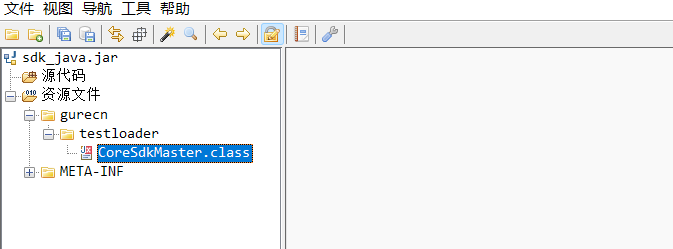

前面几篇博客介绍了Jar包如何进行签名、防止反编译，在实际项目中使用注入的方式防止反编译确实有效，但是同时会引入新的问题。今天使用一种新的方式来实现代码保护。
注入问题
通过以上博客，借助于Jar包签名及代码注入后，项目依赖使用都没有问题了。但出现一个新问题：在混淆时，当移除-dontpreverify配置编译了Jar文件，使用防止反编译文章描述的代码注入方式，防止非法进行反编译会报错，提示：
springboottest/springboot/TestSdkService.java:[46,27] 无法将类 com.sdk.encrypt.sdk中的方法 nSdkDecrypt应用到给定类型;
[ERROR] 需要: java.lang.String,java.lang.String
[ERROR] 找到: java.lang.String
[ERROR] 原因: 实际参数列表和形式参数列表长度不同
怀疑报错原因是注入代码后，原有的Jar包校验被破坏。
之前由于不影响项目功能，所以该问题没有很着急，提供给客户后，客户反复提出这个问题，所以就找寻新的方案来保护代码。同时保障代码的正常运行。
解决思路
之前做Android项目时，发现国内很多软件都会进行加固处理。通过加固处理后，项目核心逻辑使用自定义类加载工具及方法反射机制，将代码加密处理从而加大代码的反编译成本。
那么纯Java代码是否能够进行加密处理呢？查询了一下加固相关产品，发现还真有。但是APK加密工具很多都是免费提供，但是SDK加密工具一般都是收费定制，沟通了几家，发现想要试用都比较困难。求人不如求己，那么就自己实现定义类加载工具来加密Java代码。
什么是classloader？翻译即是类加载。
虚拟机把class字节码文件加载到内存，并对数据进行检验、转换解析和初始化，最终形成可以被虚拟机直接使用的Java数据类型，这个过程就是虚拟机的类加载机制。
BootstrapClassLoader（启动类加载器）负责加载 JVM 运行时核心类,加载System.getProperty(“sun.boot.class.path”)所指定的路径或jar
**ExtensionClassLoader **负责加载 JVM 扩展类，比如 swing 系列、内置的 js 引擎、xml 解析器 等等，这些库名通常以 javax 开头，它们的 jar 包位于JAVAHOME/lib/rt.jar文件中.加载System.getProperty(“java.ext.dirs”)所指定的路径或jar。在使用Java运行程序时，也可以指定其搜索路径，例如：java -Djava.ext.dirs=d:\projects\testproj\classes HelloWorld。
**AppClassLoader **是直接面向我们用户的加载器，它会加载 Classpath 环境变量里定义的路径中的 jar 包和目录。我们自己编写的代码以及使用的第三方 jar包通常都是由它来加载的。加载System.getProperty(“java.class.path”)所指定的路径或jar。在使用Java运行程序时，也可以加上-cp来覆盖原有的Classpath设置，例如： java -cp ./lavasoft/classes HelloWorld
**URLClassLoader **那些位于网络上静态文件服务器提供的 jar 包和 class文件，jdk 内置了一个 URLClassLoader，用户只需要传递规范的网络路径给构造器，就可以使用 URLClassLoader 来加载远程类库了。URLClassLoader不但可以加载远程类库，还可以加载本地路径的类库，取决于构造器中不同的地址形式。ExtensionClassLoader 和 AppClassLoader 都是 URLClassLoader 的子类，它们都是从本地文件系统里加载类库。
实现过程
定义ClassLoader
package gurecn.testloader;
import java.io.*;
import java.util.jar.JarEntry;
import java.util.jar.JarFile;
public class JarClassLoader extends ClassLoader {
private String jarFile;
private boolean isEncrypt;
public JarClassLoader(String jarFile, boolean isEncrypt) {
this.jarFile = jarFile;
this.isEncrypt = isEncrypt;
}
@Override
protected Class<?> findClass(String className) throws ClassNotFoundException {
try {
JarFile jar = new JarFile(this.jarFile);
String cla = className.replace('.', '/') + ".class";
JarEntry entry = jar.getJarEntry(cla);
if (entry == null) {
throw new ClassNotFoundException(className + ".class");
}
InputStream is = jar.getInputStream(entry);
ByteArrayOutputStream byteStream = new ByteArrayOutputStream();
if(isEncrypt) {
EnDecrpt(is, byteStream);//解密
} else {
int read = 0;
byte[] buffer = new byte[4096];
while ((read = is.read(buffer)) != -1) {
if (read > 0) {
byteStream.write(buffer, 0, read);
}
}
}
byte[] classByte = byteStream.toByteArray();
Class result = super.defineClass(className, classByte, 0, classByte.length, null);
if (result == null) {
System.err.println(className + ".class");
}
return result;
} catch (Exception e) {
return super.findSystemClass(className);
}
}
public static void EnDecrpt(InputStream in, OutputStream out) throws IOException{
int b=-1;
while((b=in.read())!=-1){
out.write(b^0xff);
}
}
}
定义核心实现代码（被加密代码）
package gurecn.testloader;
/**
* 核心代码
*/
public class CoreSdkMaster{
public void nativeSdkAuth() {
System.out.println("我是nativeSdkAuth方法");
}
}
测试代码
package gurecn.testloader;
import java.io.*;
import java.lang.reflect.InvocationTargetException;
import java.lang.reflect.Method;
public class TestGurecn {
public static void main(String[] args) throws InstantiationException, ClassNotFoundException, IllegalAccessException {
// encrpt("C:\\Users\\Administrator\\Desktop\\CoreSdkMaster.class","C:\\Users\\Administrator\\Desktop\\sdkjiami\\CoreSdkMaster.class");
System.out.println("start");
String sdkPath = "C:\\Users\\Administrator\\Desktop\\sdk\\sdk_java.jar";
JarClassLoader cl = new JarClassLoader(sdkPath, false);
try {
Class clazz = cl.loadClass("gurecn.testloader.CoreSdkMaster");
Method method = clazz.getMethod("nativeSdkAuth");
method.invoke(clazz.newInstance());
} catch (InvocationTargetException | NoSuchMethodException e) {
e.printStackTrace();
}
String sdkEncryptPath = "C:\\Users\\Administrator\\Desktop\\sdk\\sdk_java.jar";
JarClassLoader clEncrypt = new JarClassLoader(sdkEncryptPath, false);
try {
Class clazz = clEncrypt.loadClass("gurecn.testloader.CoreSdkMaster");
Method method = clazz.getMethod("nativeSdkAuth");
method.invoke(clazz.newInstance());
} catch (InvocationTargetException | NoSuchMethodException e) {
e.printStackTrace();
}
System.out.println("end");
}
private static void encrpt(String srcPath,String desPath){
try {
FileInputStream fis = new FileInputStream(srcPath);
FileOutputStream fos = new FileOutputStream(desPath);
JarClassLoader.EnDecrpt(fis, fos);
fis.close();
fos.close();
} catch (Exception e){
e.printStackTrace();
}
}
}
项目的主要代码就是上面三个java文件。
验证步骤
使用IDEA或命令，编译CoreSdkMaster.java文件，得到CoreSdkMaster.class。
运行测试代码中加密代码，生成加密后的class文件，代码如下：
encrpt("C:\\Users\\Administrator\\Desktop\\CoreSdkMaster.class","C:\\Users\\Administrator\\Desktop\\sdkjiami\\CoreSdkMaster.class");运行测试代码中加密代码，生成加密后的class文件。
将未加密、加密后的CoreSdkMaster.class文件分别保存到sdk\gurecn\testloader、sdkjiami\gurecn\testloader文件夹下，分别打包gurecn\testloader文件夹，生成两个sdk_java.jar包。
执行TestGurecn，发现反射调用加密、未加密jar包均可实现功能。
“C:\Program Files\Java\jdk1.8.0_301\bin\java.exe” “-javaagent:C:\develop\IntelliJ IDEA …..
start
我是nativeSdkAuth方法
我是nativeSdkAuth方法
end
Process finished with exit code 0
此时使用反编译工具或IDEA查看加密Jar包，发现无法查看加密后的数据：

到此，自定义classloader加载class文件方式介绍完毕。
以上代码请参考，源码可访问TestClassLoader。
引入问题
测试过程中发现使用自定义ClassLoader加载Java字节码代码，确实能够通过加密保护核心代码结构。但是当前使用中仍然存在一些问题：
- 加密后代码调试可读性较差。
- 对ClassLoader自身Jar包内class文件无法加密。
- 需要指定Jar包绝对路径，无法对依赖进项目内的Jar包加密。
- 加解方法无法做到深度隐藏，有很多实现是把解密方法封装到底层，再结合名称编码等方式来加大反编译难度。
以上问题本人继续找方法进行优化，下次我们通过其他方式来简单实现核心代码的隐藏功能。